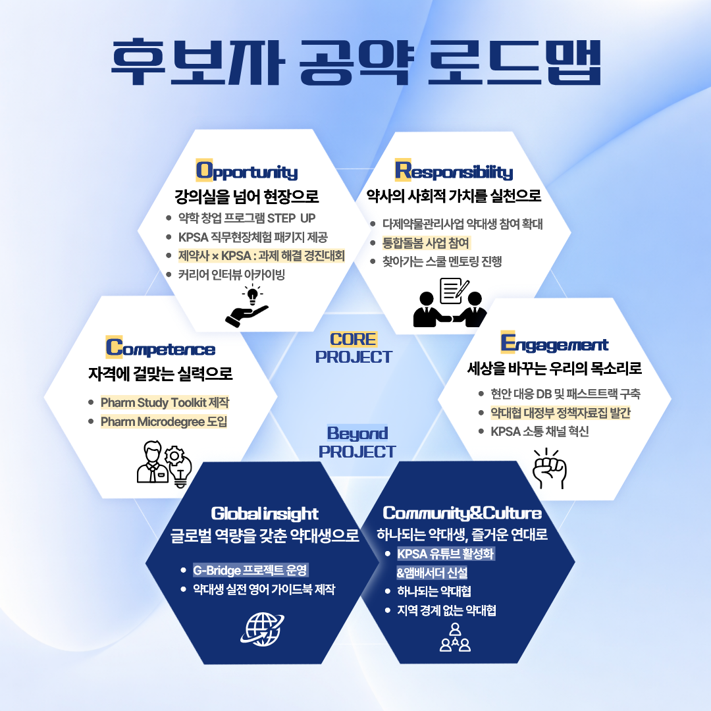

기호 1번 김백건의 약속
전국 37개 약학대학 회장님들과 함께 완성해갈, 가장 현실적이고 든든한 약속입니다.

선택과 집중, 임기 내 반드시 실현하여 결과로 증명할 최우선 과제입니다
👆 각 공약명을 클릭하면 세부사항을 볼 수 있습니다.
자격에 걸맞는 실력으로
약대생의 본질은 실력에 있습니다. 그 기준이 높아지는 시대에서 협회는 실력을 지원하겠습니다.
강의실을 넘어 현장으로
약대생이 진로를 선택하기 전에 현장을 직접 경험하고 판단할 수 있는 기회를 넓히겠습니다.
약사의 사회적 가치를 실천으로
학생 시절부터 약사의 공공성과 사회적 역할을 직접 경험할 수 있도록 하겠습니다.
세상을 바꾸는 우리의 목소리로
의견이 모이는 데서 그치지 않고, 정리되어 힘을 갖고 전달되는 구조를 만들겠습니다.
지금을 넘어 다음을 준비합니다
👆 각 공약명을 클릭하면 세부사항을 볼 수 있습니다.
글로벌 역량을 갖춘 약대생으로
하나되는 약대생, 즐거운 연대로
클릭하여 각 활동의 상세 보고를 확인하세요
제1회 청춘藥속, 북플리마켓 아카이빙, 실무실습 제도 개선 등
👆 클릭해서 상세 활동 보기
정책 아이디어톤, 건보공단 견학, 코팜포럼 등 다양한 국서 행사 기사 작성
👆 클릭해서 상세 활동 보기
병역 제도 관련 대외 정책 논의 참여 등
👆 클릭해서 상세 활동 보기
여러분의 소중한 한 표가, 약대생 사회의 '내일'을 만듭니다.
대한약학대학학생협회 제36대 협회장 선거
기호 1번 김백건 선거운동본부
선본장 : 황지명 (조선대학교)
선본원 : 김인혁 (성균관대학교)
선본원 : 이태계 (서울대학교)
선본원 : 송명하 (동덕여자대학교)
선본원 : 정연석 (우석대학교)